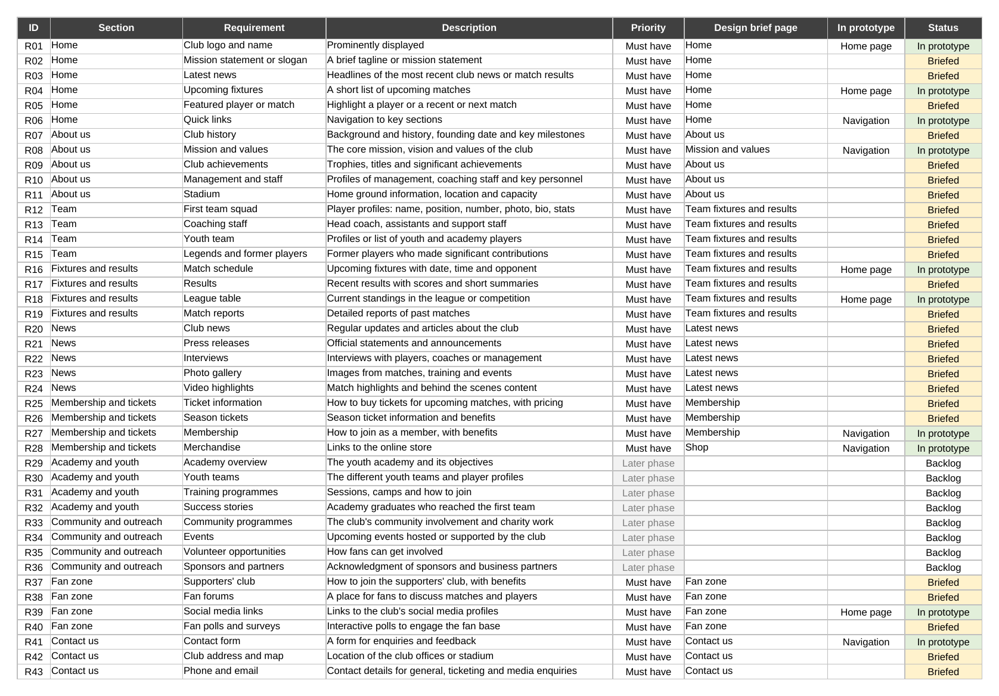
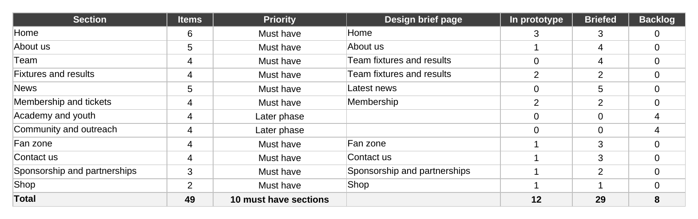
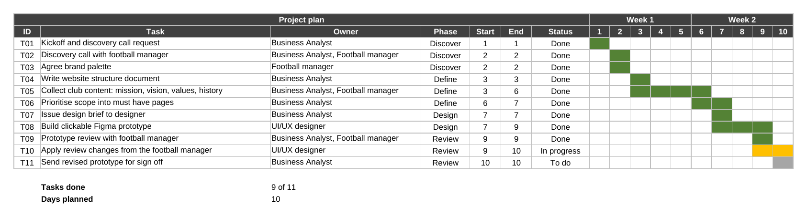
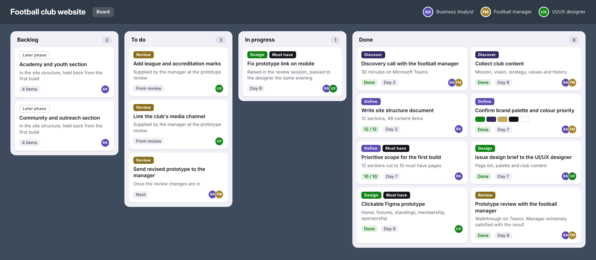
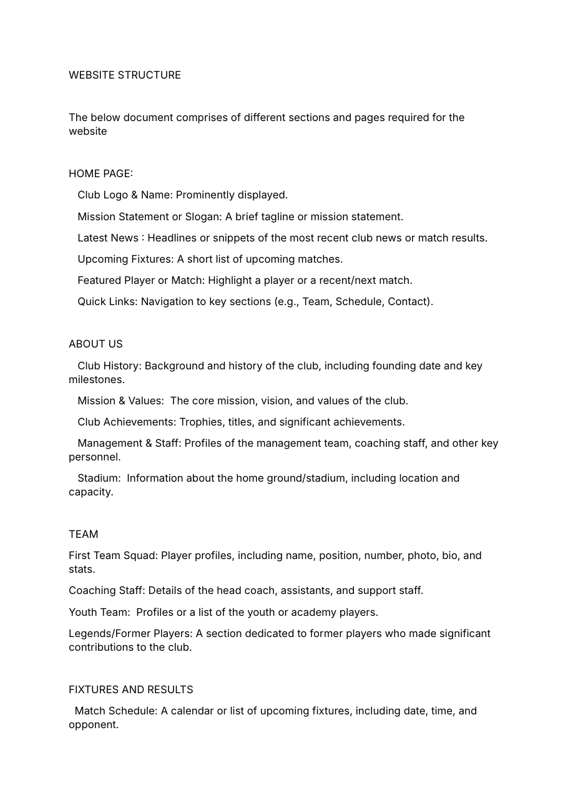
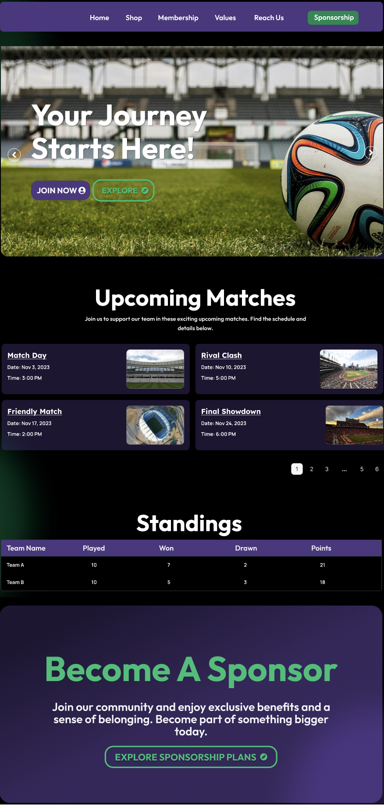

All work
Football club website
- My role Business Analyst
- Team Football manager, UI/UX designer, me
- Tools Microsoft Teams, Figma, Word, Excel, PowerPoint
The problem
A football club wanted its first website. The manager knew what the club stood for but had no brief, no page list and no design direction, so the designer had nothing to build from.
What I did
- Ran a discovery call with the football manager and collected the club's mission, vision, strategy, values and history.
- Wrote the website structure: 12 sections and 49 requirements.
- Prioritised the scope into 10 must have sections for the first build and moved 2 sections to a later phase.
- Briefed the UI/UX designer with the page list, the brand palette and the club content.
- Tracked every requirement from the structure document through to the prototype in a requirements matrix.
- Ran the prototype review with the football manager and turned the feedback into tasks for the designer.
The work
Requirements matrix

Scope summary

Project plan

Project board

Website structure document

Prototype

Result
The football manager reviewed a working clickable prototype and was extremely satisfied with it. 12 of the 49 requirements were visible in the first prototype, with the rest briefed and ready for the next round.
Skills
Requirements gathering, stakeholder management, scope prioritisation, requirements traceability, design briefing, project planning, backlog management, prototype review.
Files
Requirements and project plan (Excel) Website structure (Word)